| POV-Ray for Unix version 3.7 | ||||
|
|
||||
| Home | POV-Ray for Unix | POV-Ray Tutorial | POV-Ray Reference | |
The camera definition describes the position, projection type and properties of the camera viewing the scene. Its syntax is:
CAMERA:
camera{ [CAMERA_ITEMS...] }
CAMERA_ITEMS:
CAMERA_TYPE | CAMERA_VECTOR | CAMERA_MODIFIER |
CAMERA_IDENTIFIER
CAMERA_TYPE:
perspective | orthographic | mesh_camera{MESHCAM_MODIFIERS} | fisheye | ultra_wide_angle |
omnimax | panoramic | cylinder CylinderType | spherical
CAMERA_VECTOR:
location <Location> | right <Right> | up <Up> |
direction <Direction> | sky <Sky>
CAMERA_MODIFIER:
angle HORIZONTAL [VERTICAL] | look_at <Look_At> |
blur_samples [MIN_SAMPLES,] MAX_SAMPLES | aperture Size |
focal_point <Point> | confidence Blur_Confidence |
variance Blur_Variance | [bokeh{pigment{BOKEH}}] |
NORMAL | TRANSFORMATION | [MESHCAM_SMOOTH]
MESHCAM_MODIFIERS:
rays per pixel & distribution type & [max distance] & MESH_OBJECT & [MESH_OBJECT...]
BOKEH:
a COLOR_VECTOR in the range of <0,0,0> ... <1,1,0>
MESHCAM_SMOOTH:
optional smooth modifier valid only when using mesh_camera
Camera default values:
DEFAULT CAMERA:
camera {
perspective
location <0,0,0>
direction <0,0,1>
right 1.33*x
up y
sky <0,1,0>
}
CAMERA TYPE: perspective
angle : ~67.380 ( direction_length=0.5*
right_length/tan(angle/2) )
confidence : 0.9 (90%)
direction : <0,0,1>
focal_point: <0,0,0>
location : <0,0,0>
look_at : z
right : 1.33*x
sky : <0,1,0>
up : y
variance : 1/128
Depending on the projection type zero or more of the parameters are required:
The POV-Ray camera has 9 different models and they are as follows:
Each of which uses a different projection method to project the scene onto your screen. Regardless of the projection type all cameras use location, right, up, direction, and other keywords to determine the location and orientation of the camera. The type keywords and these four vectors fully define the camera. All other camera modifiers adjust how the camera does its job. The meaning of these vectors and other modifiers differ with the projection type used. A more detailed explanation of the camera types follows later. In the sub-sections which follows, we explain how to place and orient the camera by the use of these four vectors and the sky and look_at modifiers. You may wish to refer to the illustration of the perspective camera below as you read about these
vectors.
| 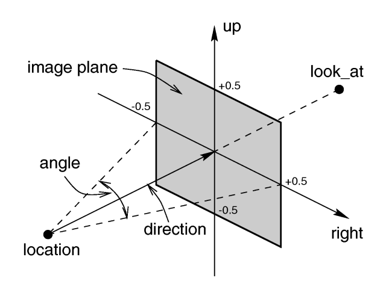 |
|
Basic (default) camera geometry |
Under many circumstances just two vectors in the camera statement are all
you need to position the camera: location and look_at
vectors. For example:
camera {
location <3,5,-10>
look_at <0,2,1>
}
The location is simply the x, y, z coordinates of the camera. The camera
can be located anywhere in the ray-tracing universe. The default location is
<0,0,0>. The look_at vector tells POV-Ray to
pan and tilt the camera until it is looking at the specified x, y, z
coordinates. By default the camera looks at a point one unit in the
z-direction from the location.
The look_at modifier should almost always be the last item in
the camera statement. If other camera items are placed after the
look_at vector then the camera may not continue to look at the
specified point.
Normally POV-Ray pans left or right by rotating about the y-axis until it
lines up with the look_at point and then tilts straight up or
down until the point is met exactly. However you may want to slant the camera
sideways like an airplane making a banked turn. You may change the tilt of
the camera using the sky vector. For example:
camera {
location <3,5,-10>
sky <1,1,0>
look_at <0,2,1>
}
This tells POV-Ray to roll the camera until the top of the camera is in
line with the sky vector. Imagine that the sky vector is an antenna pointing
out of the top of the camera. Then it uses the sky vector as the
axis of rotation left or right and then to tilt up or down in line with the
sky until pointing at the look_at point. In effect
you are telling POV-Ray to assume that the sky isn't straight up.
The sky vector does nothing on its own. It only modifies the
way the look_at vector turns the camera. The default value is
sky<0,1,0>.
The angle keyword followed by a float expression specifies
the (horizontal) viewing angle in degrees of the camera used. Even though it
is possible to use the direction vector to determine the viewing
angle for the perspective camera it is much easier to use the
angle keyword.
When you specify the angle, POV-Ray adjusts the length of the
direction vector accordingly. The formula used is
direction_length = 0.5 * right_length / tan(angle / 2) where
right_length is the length of the right vector. You should
therefore specify the direction and right vectors
before the angle keyword. The right vector is
explained in the next section.
There is no limitation to the viewing angle except for the perspective projection. If you choose viewing angles larger than 360 degrees you will see repeated images of the scene (the way the repetition takes place depends on the camera). This might be useful for special effects.
The spherical camera has the option to also specify a vertical
angle. If not specified it defaults to the horizontal angle/2
For example if you render an image with a 2:1 aspect ratio and map it to a sphere using spherical mapping, it will recreate the scene. Another use is to map it onto an object and if you specify transformations for the object before the texture, say in an animation, it will look like reflections of the environment (sometimes called environment mapping).
You will probably not need to explicitly specify or change the camera
direction vector but it is described here in case you do. It
tells POV-Ray the initial direction to point the camera before moving it with
the look_at or rotate vectors (the default value is
direction<0,0,1>). It may also be used to control the
(horizontal) field of view with some types of projection. The length of the
vector determines the distance of the viewing plane from the camera's
location. A shorter direction vector gives a wider view while a
longer vector zooms in for close-ups. In early versions of POV-Ray, this was
the only way to adjust field of view. However zooming should now be done
using the easier to use angle keyword.
If you are using the ultra_wide_angle, panoramic,
or cylindrical projection you should use a unit length
direction vector to avoid strange results. The length of the
direction vector does not matter when using the
orthographic, fisheye, or omnimax projection
types.
The primary purpose of the up and right vectors
is to tell POV-Ray the relative height and width of the view screen. The
default values are:
right 4/3*x up y
In the default perspective camera, these two vectors also
define the initial plane of the view screen before moving it with the
look_at or rotate vectors. The length of the
right vector (together with the direction vector) may
also be used to control the (horizontal) field of view with some types of
projection. The look_at modifier changes both the up
and right vectors. The angle calculation depends on the
right vector.
Most camera types treat the up and right vectors
the same as the perspective type. However several make special
use of them. In the orthographic projection: The lengths of the
up and right vectors set the size of the viewing
window regardless of the direction vector length, which is not
used by the orthographic camera.
When using cylindrical projection: types 1 and 3, the axis of
the cylinder lies along the up vector and the width is
determined by the length of right vector or it may be overridden
with the angle vector. In type 3 the up vector
determines how many units high the image is. For example if you have up
4*y on a camera at the origin. Only points from y=2 to y=-2 are
visible. All viewing rays are perpendicular to the y-axis. For type 2 and 4,
the cylinder lies along the right vector. Viewing rays for type
4 are perpendicular to the right vector.
Note: The up, right, and direction vectors should always remain perpendicular to each other or the image will be distorted. If this is not the case a warning message will be printed. The vista buffer will not work for non-perpendicular camera vectors.
Together the up and right vectors define the
aspect ratio (height to width ratio) of the resulting image. The
default values up<0,1,0> and
right<1.33,0,0> result in an aspect ratio of 4 to 3. This is the
aspect ratio of a typical computer monitor. If you wanted a tall skinny image
or a short wide panoramic image or a perfectly square image you should adjust
the up and right vectors to the appropriate
proportions.
Most computer video modes and graphics printers use perfectly square pixels.
For example Macintosh displays and IBM SVGA modes 640x480, 800x600 and
1024x768 all use square pixels. When your intended viewing method uses square
pixels then the width and height you set with the Width and
Height options or +W or +H switches
should also have the same ratio as the up and right
vectors.
Note: 640/480 = 4/3 so the ratio is proper for this square pixel mode.
Not all display modes use square pixels however. For example IBM VGA mode
320x200 and Amiga 320x400 modes do not use square pixels. These two modes
still produce a 4/3 aspect ratio image. Therefore images intended to be
viewed on such hardware should still use 4/3 ratio on their up
and right vectors but the pixel settings will not be 4/3.
For example:
camera {
location <3,5,-10>
up <0,1,0>
right <1,0,0>
look_at <0,2,1>
}
This specifies a perfectly square image. On a square pixel display like
SVGA you would use pixel settings such as +W480 +H480 or
+W600 +H600. However on the non-square pixel Amiga 320x400 mode you
would want to use values of +W240 +H400 to render a square
image.
The bottom line issue is this: the up and right
vectors should specify the artist's intended aspect ratio for the image
and the pixel settings should be adjusted to that same ratio for square
pixels and to an adjusted pixel resolution for non-square pixels. The
up and right vectors should not be adjusted
based on non-square pixels.
The right vector also describes the direction to the right of
the camera. It tells POV-Ray where the right side of your screen is. The sign
of the right vector can be used to determine the handedness of
the coordinate system in use. The default value is:
right<1.33,0,0>. This means that the +x-direction is to the
right. It is called a left-handed system because you can use your
left hand to keep track of the axes. Hold out your left hand with your palm
facing to your right. Stick your thumb up. Point straight ahead with your
index finger. Point your other fingers to the right. Your bent fingers are
pointing to the +x-direction. Your thumb now points into +y-direction. Your
index finger points into the +z-direction.
To use a right-handed coordinate system, as is popular in some CAD programs
and other ray-tracers, make the same shape using your right hand. Your thumb
still points up in the +y-direction and your index finger still points
forward in the +z-direction but your other fingers now say the +x-direction
is to the left. That means that the right side of your screen is now in the
-x-direction. To tell POV-Ray to act like this you can use a negative x value
in the right vector such as:
right<-1.33,0,0>. Since having x values increasing to the left
does not make much sense on a 2D screen you now rotate the whole thing 180
degrees around by using a positive z value in your camera's location. You
end up with something like this.
camera {
location <0,0,10>
up <0,1,0>
right <-1.33,0,0>
look_at <0,0,0>
}
Now when you do your ray-tracer's aerobics, as explained in the section Understanding POV-Ray's Coordinate System, you use your right hand to determine the direction of rotations.
In a two dimensional grid, x is always to the right and y is up. The two versions of handedness arise from the question of whether z points into the screen or out of it and which axis in your computer model relates to up in the real world.
Architectural CAD systems, like AutoCAD, tend to use the God's Eye orientation that the z-axis is the elevation and is the model's up direction. This approach makes sense if you are an architect looking at a building blueprint on a computer screen. z means up, and it increases towards you, with x and y still across and up the screen. This is the basic right handed system.
Stand alone rendering systems, like POV-Ray, tend to consider you as a participant. You are looking at the screen as if you were a photographer standing in the scene. The up direction in the model is now y, the same as up in the real world and x is still to the right, so z must be depth, which increases away from you into the screen. This is the basic left handed system.
The various transformations such as translate and
rotate modifiers can re-position the camera once you have defined
it. For example:
camera {
location < 0, 0, 0>
direction < 0, 0, 1>
up < 0, 1, 0>
right < 1, 0, 0>
rotate <30, 60, 30>
translate < 5, 3, 4>
}
In this example, the camera is created, then rotated by 30 degrees about the x-axis, 60 degrees about the y-axis and 30 degrees about the z-axis, then translated to another point in space.
| 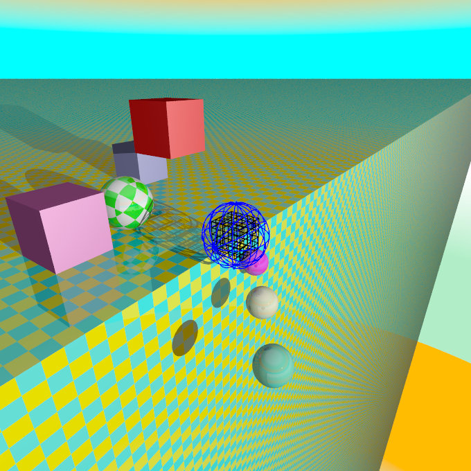 |
The following sections explain the different projection types that can be used with the scene camera. The most common types are the perspective and orthographic projections. The CAMERA_TYPE should be the first item in a |
|
The camera sample scene global view |
Note: The vista buffer feature can only be used with the perspective and orthographic camera.
The perspective keyword specifies the default perspective camera which simulates the classic pinhole camera. The horizontal viewing angle is either determined by the ratio between the length of the direction vector and the length of the right vector or by the optional keyword angle, which is the preferred way. The viewing angle has to be larger than 0 degrees and smaller than 180 degrees.
| 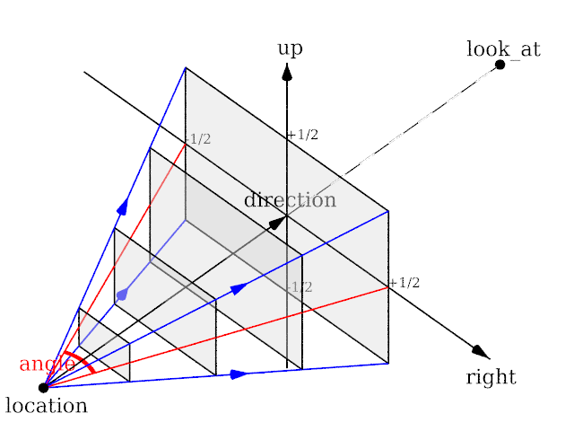 | 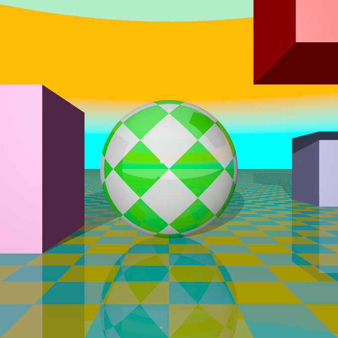 |
|
The perspective projection diagram |
A perspective camera sample image |
Note: The angle keyword can be used as long as less than 180 degrees. It recomputes the length of right and up vectors using direction. The proper aspect ratio between the up and right vectors is maintained.
The orthographic camera offers two modes of operation:
The pure orthographic projection. This projection uses parallel camera rays to create an image of the scene. The area of view is determined by the lengths of the right and up vectors. One of these has to be specified, they are not taken from the default camera. If omitted the second method of the camera is used.
If, in a perspective camera, you replace the perspective keyword by orthographic and leave all other parameters the same, you will get an orthographic view with the same image area, i.e. the size of the image is
the same. The same can be achieved by adding the angle keyword to an orthographic camera. A value for the angle is optional. So this second mode is active if no up and right are within the camera statement, or when the angle keyword is within the camera statement.
You should be aware though that the visible parts of the scene change when switching from perspective to orthographic view. As long as all objects of interest are near the look_at point they will be still visible if the orthographic camera is used. Objects farther away may get out of view while nearer objects will stay in view.
If objects are too close to the camera location they may disappear. Too close here means, behind the orthographic camera projection plane (the plane that goes through the location point).
| 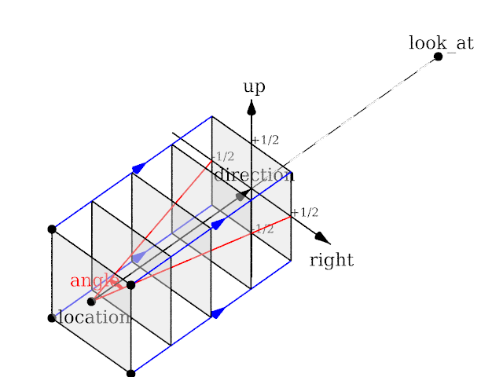 | 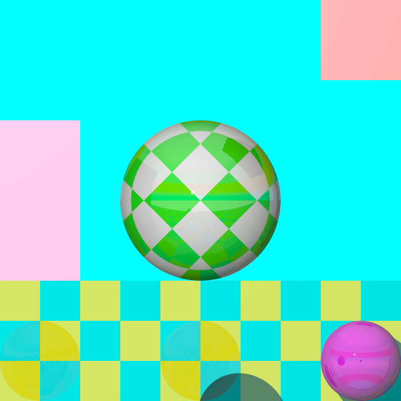 |
|
The orthographic projection diagram |
An orthographic camera sample image |
Note: The length of direction is irrelevant unless angle is used. The lengths of up and right define the dimensions of the view. The angle keyword can be used, as long as less than 180. It will override the length of the right and up vectors (the aspect ratio between up and right will be kept nevertheless) with a scope of a perspective camera having the same direction and angle.
The mesh projection is a special camera type that allows complete control of the ray origin and direction for each pixel of the output image. The basic concept is to associate pixels with faces defined within a mesh or mesh2 object. The mesh need not be instantiated in the scene, though it can be, and doing so can lead to some interesting uses, such as texture baking or illumination calculations.
In its simplest form, each pixel of the output image is assigned to a face of the mesh according to (width * (int) y) + (int) x, however, more complex mapping is possible via multiple meshes and multiple rays per pixel. The type of mapping in use is determined by the distribution type parameter in the camera declaration. Except for mapping #3, the ray origin will be set to the centroid of the face, and the direction will be that of the face's normal. For mapping #3, barycentric co-ordinates are determined from the UV co-ordinates of the first face to match the X and Y position, and those are then converted to a position on the face which will serve as the ray origin. Support is provided to move the origin off the face along the normal, and to reverse the ray direction.
For most of the distribution methods, any POV feature that causes sub-pixel positioning to be used for shooting rays (e.g. anti-aliasing or jitter) will not do anything useful, because X and Y are converted to integers for indexing purposes. At this time, no warning is issued if anti-aliasing or jitter is requested when rendering a non-applicable distribution; this may be added later.
The syntax for the mesh camera is as follows:
camera {
mesh_camera {
rays per pixel
distribution type
[max distance]
mesh {
MESH_OBJECT_IDENTIFIER
[TRANSFORMATIONS]
}
[mesh ...]
}
[location]
[direction]
[smooth]
}
Note: The mesh camera is an experimental feature introduced in version 3.7 beta 39 and its syntax is likely to change. Additionally, many of the normal camera concepts presented in this section (such as location and direction) either do not work as they do for other cameras or do not work at all (for example, the concept of 'up' simply does not apply to a mesh camera). It should also be kept in mind that the camera has not yet been tested with many of POV-Ray's advanced features such as photons and radiosity, and more work in that area is likely to be needed.
This float parameter controls the number of rays that will be shot for each pixel in the output image. Each distribution allows different values, but the minimum is always 1.
This float parameter controls how pixels are assigned to faces as documented below:
This method allows single or multiple rays per pixel, with the ray number for that pixel allocated to each mesh in turn. The index into the meshes is the ray number, where rays per pixel is greater than one, and the index into the selected mesh is the pixel number within the output image. If there is no face at that pixel position, the resulting output pixel is unaffected.
You must supply at least as many meshes as rays per pixel. Each pixel is shot rays per pixel times, and the results averaged. Any ray that does not correspond with a face (i.e. the pixel number is greater than or equal to the face count) does not affect the resulting pixel color. Generally, it would be expected that the number of faces in each mesh is the same, but this is not a requirement. Keep in mind that a ray that is not associated with a face is not the same thing as a ray that is but that, when shot, hits nothing. The latter will return a pixel (even if it is transparent or the background color), whereas the former causes the ray to not be shot in the first place; hence, it is not included in the calculation of the average for the pixel.
Using multiple rays per pixel is useful for generating anti-aliasing (since standard AA won't work) or for special effects such as focal blur, motion blur, and so forth, with each additional mesh specified in the camera representing a slightly different camera position.
Note: It is legal to use transformations on meshes specified in the camera body, hence it's possible to obtain basic anti-aliasing by using a single mesh multiple times, with subsequent ones jittered slightly from the first combined with a suitable rays per pixel count.
This method allows both multiple rays per pixel and summing of meshes, in other words the faces of all the supplied meshes are logically summed together as if they were one single mesh. In this mode, if you specify more than one ray per pixel, the second ray for a given pixel will go to the face at (width * height * ray_number) + pixel_number, where ray_number is the count of rays shot into a specific pixel. If the calculated face index exceeds the total number of faces for all the meshes, no ray is shot.
The primary use for this summing method is convenience in generation of the meshes, as some modelers slow down to an irritating extent with very large meshes. Using distribution #1 allows these to be split up.
Distribution method 2 is a horizontal array of sub-cameras, one per mesh (i.e. like method #0, it does not sum meshes). The image is divided horizontally into #num_meshes blocks, with the first mesh listed being the left-most camera, and the last being the right-most. The most obvious use of this would be with two meshes to generate a stereo camera arrangement.
In this mode, you can (currently) only have a single ray per pixel.
This method will reverse-map the face from the UV co-ordinates. Currently, only a single ray per pixel is supported, however, unlike the preceding methods, standard AA and jitter will work. This method is particularly useful for texture baking and resolution-independent mesh cameras, but requires that the mesh have a UV map supplied with it.
You can use the smooth modifier to allow interpolation of the normals at the vertices. This allows for use of UV mapped meshes as cameras with the benefit of not being resolution dependent, unlike the other distributions. The interpolation is identical to that used for smooth_triangles.
If used for texture baking, the generated image may have visible seams when applied back to the mesh, this can be mitigated. Also, depending on the way the original UV map was set up, using AA may produce incorrect pixels on the outside edge of the generated maps.
One or more mesh or mesh2 objects to be used for the camera. These will be treated differently depending on the distribution method, as explained above. Transformations on the meshes can be used here, and will reflect on the resulting image as it would be expected for a regular camera.
With this special camera, location doesn't affect where the camera is placed per se (that information is on the mesh object itself), but is used to move the origin of the ray off the face, along the normal of that face. This would typically be done for texture baking or illumination calculation scenes where the camera mesh is also instantiated into the scene, usually only a tiny amount of displacement is needed. The X and Y for location is not currently used, and the Z always refers to the normal of the face, rather than the real Z direction in the scene.
Like location, this doesn't correspond to the real direction vector of the camera. It serves only to reverse the normal of all the faces, if necessary. If the Z component is less than -EPSILON, then the rays will be shot in the opposite direction than they would otherwise have been. X and Y are not used.
This optional parameter is only useful with distribution #3, and will cause the ray direction to be interpolated according to the same rules as are applied to smooth triangles. For this to work, the mesh must have provided a normal for each vertex.
Note: See the sample scene files located in ~scenes/camera/mesh_camera/ for additional usages and other samples of mesh cameras. There are also some useful macros to assist in generating and processing meshes for use as cameras.
This is a spherical projection. The viewing angle is specified by the angle keyword. An angle of 180 degrees creates the "standard" fisheye while an angle of 360 degrees creates a super-fisheye or "I-see-everything-view". If you use this projection you should get a circular image. If this is not the case, i.e. you get an elliptical image, you should read Aspect Ratio.
| 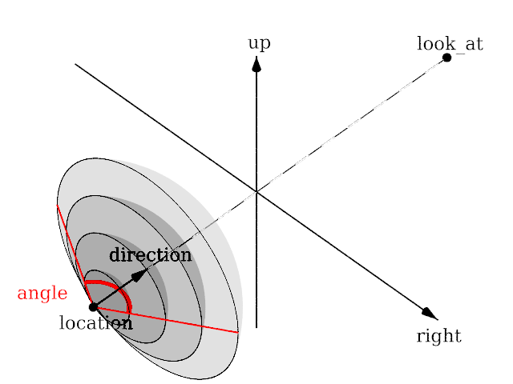 | 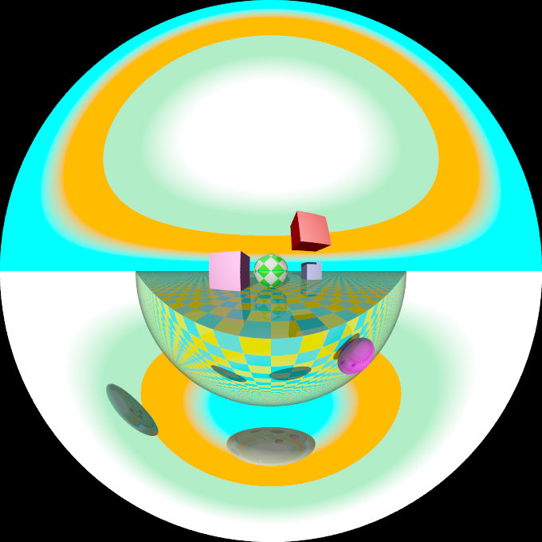 |
|
The fisheye projection diagram |
A fisheye camera sample image |
Note: The length of the direction, up and right vectors are irrelevant. The angle keyword is the important setting.
The ultra wide angle projection is somewhat similar to the fisheye, but it projects the image onto a rectangle instead of a circle. The viewing angle can be specified by using the angle keyword. The aspect ratio of the lengths of the up/right vectors are used to provide the vertical angle from the horizontal angle, so that the ratio of vertical angle on horizontal angle is identical to the ratio of the length of up on length of right. When the ratio is one, a square is wrapped on a quartic surface defined as follows:
x2+y2+z2 = x2y2 + 1
The section where z=0 is a square, the section where x=0 or y=0 is a circle, and the sections parallel to x=0 or y=0 are ellipses. When the ratio is not one, the bigger angle obviously gets wrapped further. When the angle reaches 180, the border meets the square section. The angle can be greater than 180, in that case, when both (vertical and horizontal) angles are greater than 180, the parts around the corners of the square section will be wrapped more than once. The classical usage (using an angle of 360) but with a up/right ratio of 1/2 up 10*y and right 20*x will keep the top of the image as the zenith, and the bottom of the image as the nadir, avoiding perception issues and giving a full 360 degree view.
| 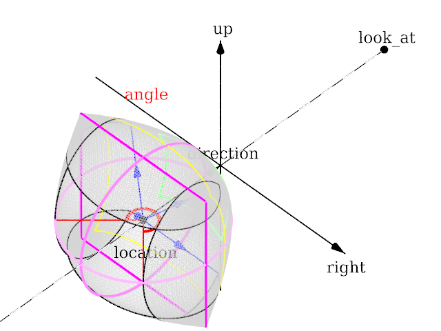 | 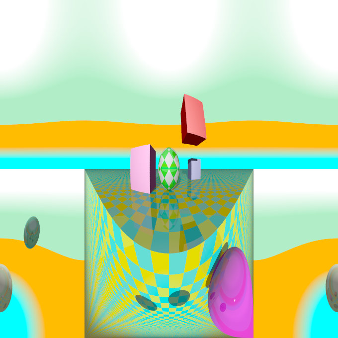 |
|
The ultra wide angle projection diagram |
An ultra wide angle sample image |
The omnimax projection is a 180 degrees fisheye that has a reduced viewing angle in the vertical direction. In reality this projection is used to make movies that can be viewed in the dome-like Omnimax theaters. The image will look somewhat elliptical.
| 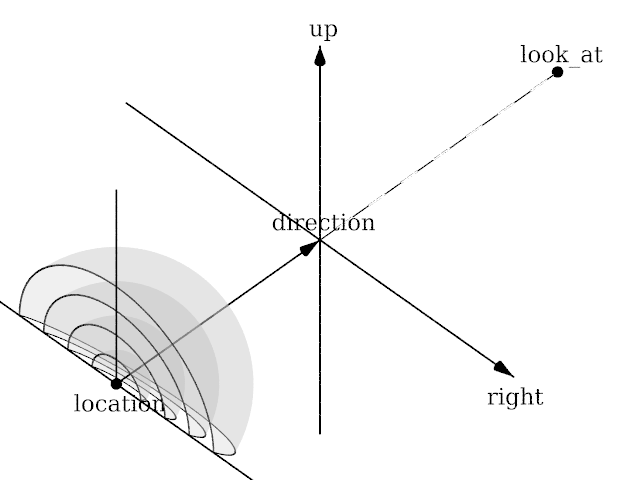 | 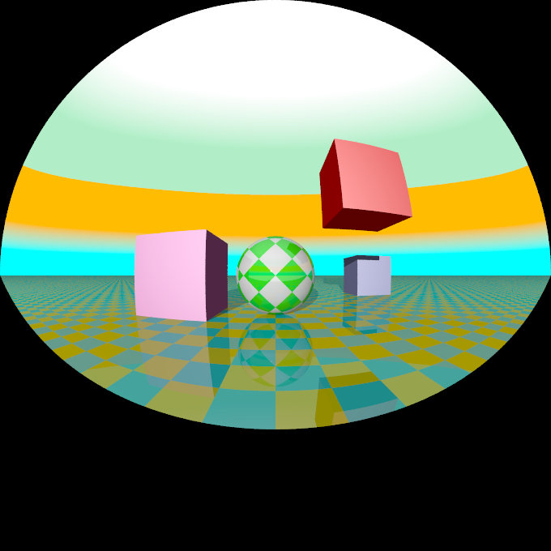 |
|
The omnimax projection diagram |
An omnimax camera sample image |
Note: The use of the angle keyword is irrelevant, the relative length of up and right vectors are what is important.
This projection is called "cylindrical equirectangular projection". It overcomes the degeneration problem of the perspective projection if the viewing angle approaches 180 degrees. It uses a type of cylindrical projection to be able to use viewing angles larger than 180 degrees with a tolerable lateral-stretching distortion. The angle keyword is used to determine the viewing angle.
| 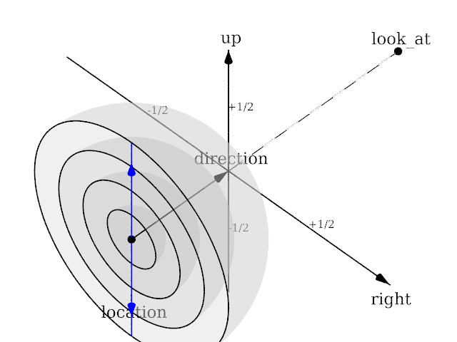 | 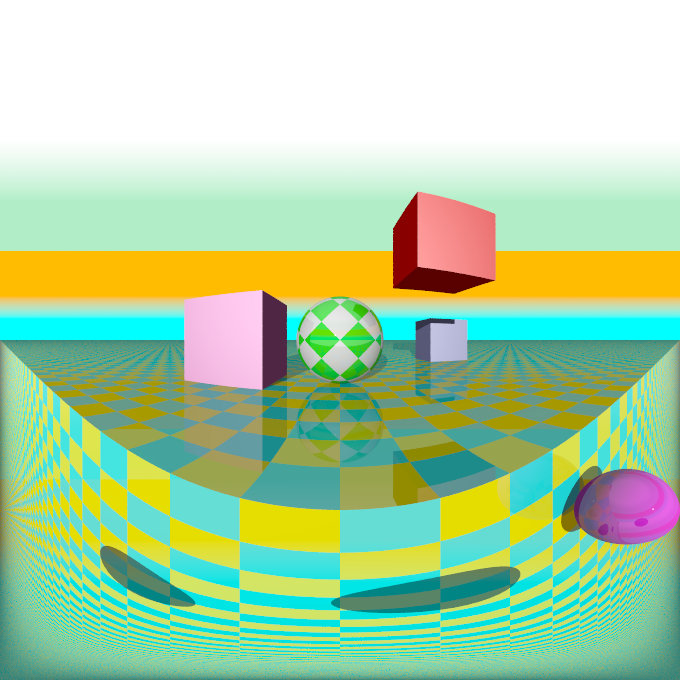 |
|
The panoramic projection diagram |
A panoramic camera sample image |
Note: The angle keyword is irrelevant. The relative length of direction, up and right vectors are important as they define the lengths of the 3 axis of the ellipsoid. With identical length and orthogonal vectors (both strongly recommended, unless used on purpose), it's identical to a spherical camera with angle 180,90.
Using this projection the scene is projected onto a cylinder. There are four different types of cylindrical projections depending on the orientation of the cylinder and the position of the viewpoint. An integer value in the range 1 to 4 must follow the cylinder keyword. The viewing angle and the length of the up or right vector determine the dimensions of the camera and the visible image. The characteristics of different types are as follows:
| 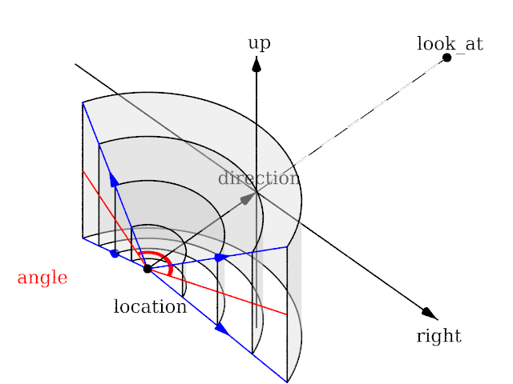 | 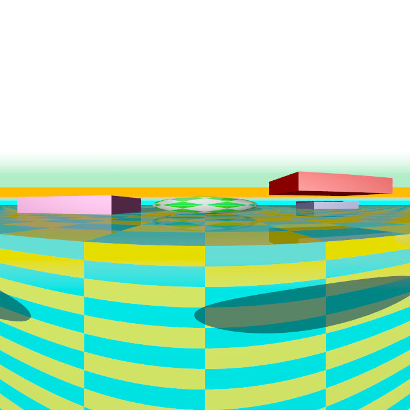 |
|
The type 1 cylindrical projection diagram |
A type 1 cylindrical camera sample image |
| 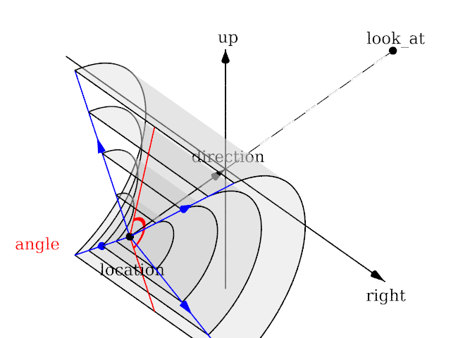 | 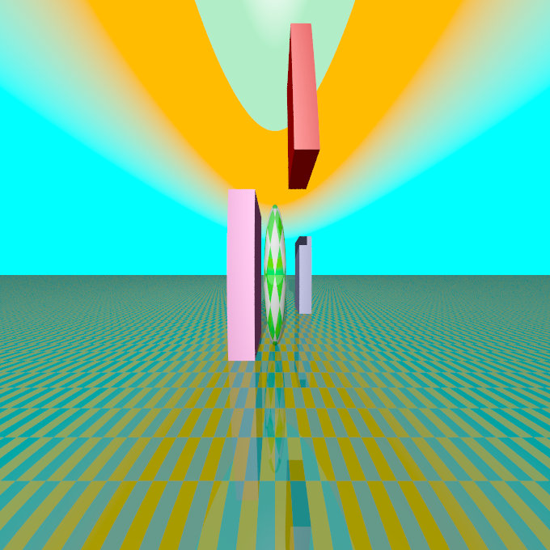 |
|
The type 2 cylindrical projection diagram |
A type 2 cylindrical camera sample image |
| 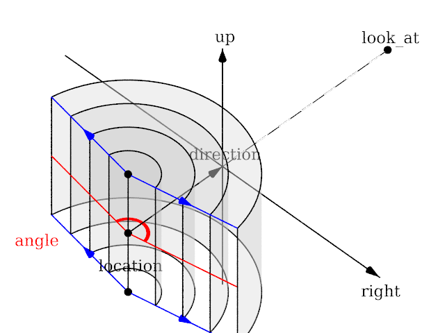 | 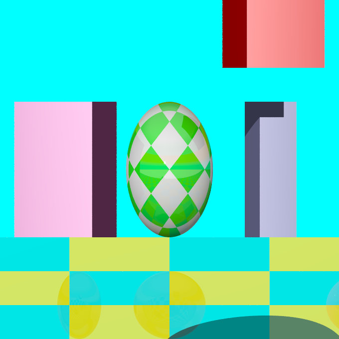 |
|
The type 3 cylindrical projection diagram |
A type 3 cylindrical camera sample image |
| 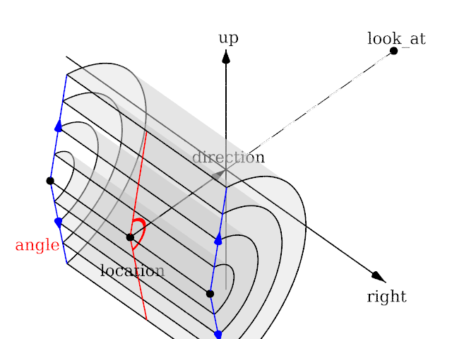 | 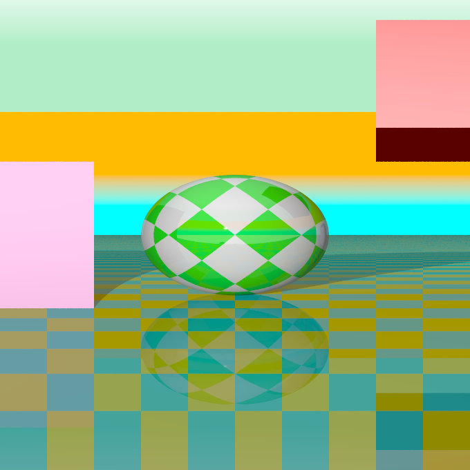 |
|
The type 4 cylindrical projection diagram |
A type 4 cylindrical camera sample image |
Using this projection the scene is projected onto a sphere.
The syntax is:
camera {
spherical
[angle HORIZONTAL [VERTICAL]]
[CAMERA_ITEMS...]
}
The first value after angle sets the horizontal viewing angle of the camera. With the optional second value, the vertical viewing angle is set: both in degrees. If the vertical angle is not specified, it defaults to half the horizontal angle.
The spherical projection is similar to the fisheye projection, in that the scene is projected on a sphere. But unlike the fisheye camera, it uses rectangular coordinates instead of polar coordinates; in this it works the same way as spherical mapping (map_type 1).
This has a number of uses. Firstly, it allows an image rendered with the spherical camera to be mapped on a sphere without distortion (with the fisheye camera, you first have to convert the image from polar to rectangular coordinates in some image editor). Also, it allows effects such as "environment mapping", often used for simulating reflections in scanline renderers.
| 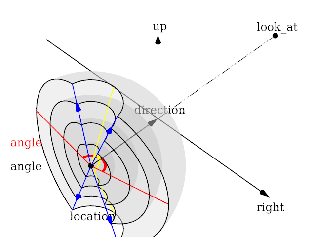 | 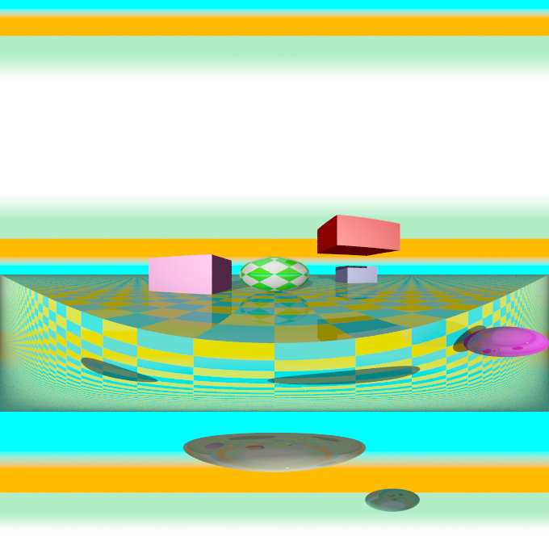 |
|
The spherical projection diagram |
A spherical camera sample image |
Note: The lengths of the direction, up and right vectors are irrelevant. Angle is the important setting, and it gets two values separated by a comma: the first is the horizontal angle, the second is the vertical angle. Both values can reach 360. If the second value is missing, it is set to half the value of the first.
POV-Ray can simulate focal depth-of-field by shooting a number of sample rays from jittered points within each pixel and averaging the results.
To turn on focal blur, you must specify the aperture keyword followed by a float value which determines the depth of the sharpness zone. Large apertures give a lot of blurring, while narrow apertures will give a wide zone of sharpness.
Note: While this behaves as a real camera does, the values for aperture are purely arbitrary and are not related to f-stops.
You must also specify the blur_samples keyword followed by an integer value specifying the maximum number of rays to use for each pixel. More rays give a smoother appearance but is slower. By default no focal blur is used, i. e. the default aperture is 0 and the default number of samples is 0.
The center of the zone of sharpness is specified by the focal_point vector. The zone of sharpness is a plane through the focal_point and is parallel to the camera. Objects close to this plane of focus are in focus and those farther from that plane are more blurred. The default value is focal_point<0,0,0>.
Although blur_samples specifies the maximum number of samples, there is an adaptive mechanism that stops shooting rays when a certain degree of confidence has been reached. At that point, shooting more rays would not result in a significant change.
Extra samples are generated in a circular rather than square pattern when blur_samples is not set to either 4, 7, 19 or 37, leading to a circular rather than square bokeh. The extra samples are generated from a Halton sequence rather than a random stream. You can also optionally specify a minimum number of samples to be taken before testing against the confidence and variance settings. The default is 4, if the blur_samples maximum is less than 7, otherwise the default is 7, to provide a means to get rid of stray non-blurred pixels.
The syntax is:
blur_samples [ MIN_SAMPLES, ] MAX_SAMPLES
The confidence and
variance keywords are followed by float values to control the adaptive function. The confidence value is used to determine when the samples seem to be close enough to the correct color. The variance value specifies an acceptable tolerance on the variance of the samples taken so far. In other words, the process of shooting sample rays is terminated when the estimated color value is very likely (as controlled by the confidence probability) near the real color value.
Since the confidence is a probability its values can range from 0 to less than 1 (the default is 0.9, i. e. 90%). The value for the variance should be in the range of the smallest displayable color difference (the default is 1/128). If 1 is used POV-Ray will issue a warning and then use the default instead.
Rendering with the default settings can result in quite grainy images. This can be improved by using a lower variance. A value of 1/10000 gives a fairly good result (with default confidence and blur_samples set to something like 100) without being unacceptably slow.
Larger confidence values will lead to more samples, slower traces and better images. The same holds for smaller variance thresholds.
Focal blur can also support a user-defined bokeh using the following syntax:
camera {
// ... focal blur camera definition
bokeh {
pigment { ... }
}
}
If bokeh is specified, focal blur will use a custom sampling sequence based on the specified pigment's brightness in the range <0,0,0> to <1,1,0> i.e. the unit square in the XY plane.
The optional normal may be used to assign a normal pattern to
the camera. For example:
camera{
location Here
look_at There
normal { bumps 0.5 }
}
All camera rays will be perturbed using this pattern. The image will be distorted as though you were looking through bumpy glass or seeing a reflection off of a bumpy surface. This lets you create special effects. See the animated scene camera2.pov for an example. See Normal for information on normal patterns.
Camera identifiers may be declared to make scene files more readable and to parameterize scenes so that changing a single declaration changes many values. You may declare several camera identifiers if you wish. This makes it easy to quickly change cameras. An identifier is declared as follows.
CAMERA_DECLARATION: #declare IDENTIFIER = CAMERA | #local IDENTIFIER = CAMERA
Where IDENTIFIER is the name of the identifier up to 40 characters long and CAMERA is any valid camera statement. See #declare vs. #local for information on identifier scope. Here is an example...
#declare Long_Lens =
camera {
location -z*100
look_at <0,0,0>
angle 3
}
#declare Short_Lens =
camera {
location -z*50
look_at <0,0,0>
angle 15
}
camera {
Long_Lens // edit this line to change lenses
translate <33,2,0>
}
Note: Only camera transformations can be added to an already declared camera. Camera behaviour changing keywords are not allowed, as they are needed in an earlier stage for resolving the keyword order dependencies.
Atmospheric effects are a loosely-knit group of features that affect the background and/or the atmosphere enclosing the scene. POV-Ray includes the ability to render a number of atmospheric effects, such as fog, haze, mist, rainbows and skies.
Atmospheric effects such as fog, dust, haze, or visible gas may be
simulated by a media statement specified in the scene but not
attached to any object. All areas not inside a non-hollow object in the
entire scene. A very simple approach to add fog to a scene is explained in the section Fog however this kind of fog does not interact with any
light sources like media does. It will not show light beams or other effects and is therefore not very realistic.
The atmosphere media effect overcomes some of the fog's limitations by calculating the interaction between light and the particles in the atmosphere using volume sampling. Thus shafts of light beams will become visible and objects will cast shadows onto smoke or fog.
Note: POV-Ray cannot sample media along an infinitely long ray. The ray must be finite in order to be possible to sample. This means that sampling media is only possible for rays that hit an object, so no atmospheric media will show up against the background or sky_sphere. Another way of being able to sample media is using spotlights, because in this case the ray is not infinite, as it is sampled only inside the spotlight cone.
With spotlights you will be able to create the best results because their
cone of light will become visible. Pointlights can be used to create effects
like street lights in fog. Lights can be made to not interact with the
atmosphere by adding media_interaction off to the light source.
They can be used to increase the overall light level of the scene to make it
look more realistic.
Complete details on media are given in the section
Media. Earlier versions of POV-Ray used an
atmosphere statement for atmospheric effects but that system was
incompatible with the old object halo system. So
atmosphere has been eliminated and replaced with a simpler and more
powerful media feature. The user now only has to learn one
media system for either atmospheric or object use.
If you only want media effects in a particular area, you should use object media rather than only relying upon the media pattern. In general it will be faster and more accurate because it only calculates inside the constraining object.
Note: The atmosphere feature will not work if the camera is inside a non-hollow object (see the section Empty and Solid Objects for a detailed explanation).
A background color can be specified if desired. Any ray that does not hit an object will be colored with this color. The default background is black. The syntax for background is:
BACKGROUND:
background {COLOR}
Note: As of version 3.7 some changes have been made to the way alpha is handled when +ua is activated.
background keyword would by default supply a background with transmit set to 1.0 (i.e. fully transparent provided that +ua is being used). This is no longer the case. While the default background is transparent, any background specified in a scene file (unless 3.6 or earlier compatibility is being used) will now be opaque unless transmit is explicitly given. In other words, use rgbft<> rather than rgb<> in the background statement if you want the old behavior.+ua is in effect (i.e. where the background could otherwise have been seen through the object). Now, however, the background color is taken into account, even if it is not otherwise visible. Blending is performed in the same way regardless of the presence of background transparency.Note: When using Output_Alpha=on or +ua with legacy scenes (the #version directive set to less than 3.7) the background will be suppressed, except in reflections.
If it is not necessary for light beams to interact with atmospheric media,
then fog may be a faster way to simulate haze or fog. This
feature artificially adds color to every pixel based on the distance the ray
has traveled. The syntax for fog is:
FOG:
fog { [FOG_IDENTIFIER] [FOG_ITEMS...] }
FOG_ITEMS:
fog_type Fog_Type | distance Distance | COLOR |
turbulence <Turbulence> | turb_depth Turb_Depth |
omega Omega | lambda Lambda | octaves Octaves |
fog_offset Fog_Offset | fog_alt Fog_Alt |
up <Fog_Up> | TRANSFORMATION
Fog default values:
lambda : 2.0 fog_type : 1 fog_offset : 0.0 fog_alt : 0.0 octaves : 6 omega : 0.5 turbulence : <0,0,0> turb_depth : 0.5 up : <0,1,0>
Currently there are two fog types, the default fog_type 1 is
a constant fog and fog_type 2 is ground fog. The constant fog
has a constant density everywhere while the ground fog has a constant density
for all heights below a given point on the up axis and thins out along this
axis.
The color of a pixel with an intersection depth d is calculated by
PIXEL_COLOR = exp(-d/D) * OBJECT_COLOR + (1-exp(-d/D)) * FOG_COLOR
where D is the specified value of the required fog distance
keyword. At depth 0 the final color is the object's color. If the
intersection depth equals the fog distance the final color consists of 64%
of the object's color and 36% of the fog's color.
Note: For this equation, a distance of zero is undefined. In practice, povray will treat this value as "fog is off". To use an extremely thick fog, use a small nonzero number such as 1e-6 or 1e-10.
For ground fog, the height below which the fog has constant density is
specified by the fog_offset keyword. The fog_alt
keyword is used to specify the rate by which the fog fades away. The default
values for both are 0.0 so be sure to specify them if ground fog is used. At
an altitude of Fog_Offset+Fog_Alt the fog has a
density of 25%. The density of the fog at height less than or equal to
Fog_Offset is 1.0 and for height larger than than Fog_Offset
is calculated by:
1/(1 + (y - Fog_Offset) / Fog_Alt) ^2
The total density along a ray is calculated by integrating from the height of the starting point to the height of the end point.
The optional up vector specifies a direction pointing up,
generally the same as the camera's up vector. All calculations done
during the ground fog evaluation are done relative to this up vector, i. e.
the actual heights are calculated along this vector. The up vector can also
be modified using any of the known transformations described in
Transformations. Though it may not be a good idea to scale the up
vector - the results are hardly predictable - it is quite useful to be able
to rotate it. You should also note that translations do not affect the up
direction (and thus do not affect the fog).
The required fog color has three purposes. First it defines the color to be used in blending the fog and the background. Second it is used to specify a translucency threshold. By using a transmittance larger than zero one can make sure that at least that amount of light will be seen through the fog. With a transmittance of 0.3 you will see at least 30% of the background. Third it can be used to make a filtering fog. With a filter value larger than zero the amount of background light given by the filter value will be multiplied with the fog color. A filter value of 0.7 will lead to a fog that filters 70% of the background light and leaves 30% unfiltered.
Fogs may be layered. That is, you can apply as many layers of fog as you like. Generally this is most effective if each layer is a ground fog of different color, altitude and with different turbulence values. To use multiple layers of fogs, just add all of them to the scene.
You may optionally stir up the fog by adding turbulence. The turbulence
keyword may be followed by a float or vector to specify an amount of
turbulence to be used. The omega, lambda and
octaves turbulence parameters may also be specified. See
section Pattern Modifiers for details on all of these turbulence parameters.
Additionally the fog turbulence may be scaled along the direction of the
viewing ray using the turb_depth amount. Typical values are from
0.0 to 1.0 or more. The default value is 0.5 but any float value may be
used.
Note: The fog feature will not work if the camera is inside a non-hollow object (see the section Empty and Solid Objects for a detailed explanation).
The sky sphere is used create a realistic sky background without the need of an additional sphere to simulate the sky. Its syntax is:
SKY_SPHERE:
sky_sphere { [SKY_SPHERE_IDENTIFIER] [SKY_SPHERE_ITEMS...] }
SKY_SPHERE_ITEM:
PIGMENT | TRANSFORMATION | [emission]
Note: When using Output_Alpha=on or +ua with legacy scenes (the #version directive set to less than 3.7) the sky_sphere will be suppressed, except in reflections.
The sky sphere can contain several pigment layers with the last pigment being at the top, i. e. it is evaluated last, and the first pigment being at the bottom, i. e. it is evaluated first. If the upper layers contain filtering and/or transmitting components lower layers will shine through. If not lower layers will be invisible.
Note: Version 3.7 changed the effect of filter in a layered-pigment sky_sphere to match the behavior of a corresponding layered-texture large regular sphere. The old behavior, though probably having been unintentional, is automatically re-activated for backward compatibility when a #version of less than 3.7 is specified.
The sky sphere is calculated by using the direction vector as the parameter for evaluating the pigment patterns. This leads to results independent from the view point, which fairly accurately models a real sky, where the distance to the sky is much larger than the distances between visible objects.
Optionally adding the emission keyword allows for brightness tuning of image-mapped sky sphere's. The default is rgb <1,1,1> with higher values increasing the brightness, and lower values correspondingly decrease it. Although primarily intended for easy tuning of light probe skies, the parameter also works with procedural sky pigments.
If you want to add a nice color blend to your background you can easily do this by using the following example.
sky_sphere {
pigment {
gradient y
color_map {
[ 0.5 color CornflowerBlue ]
[ 1.0 color MidnightBlue ]
}
scale 2
translate -1
}
emission rgb <0.8,0.8,1>
}
This gives a soft blend from CornflowerBlue at the horizon to MidnightBlue at the zenith. The scale and translate operations are used to map the direction vector values, which lie in the range from <-1, -1, -1> to <1, 1, 1>, onto the range from <0, 0, 0> to <1, 1, 1>. Thus a repetition of the color blend is avoided for parts of the sky below the horizon.
In order to easily animate a sky sphere you can transform it using the usual transformations described in Transformations. Though it may not be a good idea to translate or scale a sky sphere - the results are hardly predictable - it is quite useful to be able to rotate it. In an animation the color blendings of the sky can be made to follow the rising sun for example.
Note: Only one sky sphere can be used in any scene. It also will not work as you might expect if you use camera types like the orthographic or cylindrical camera. The orthographic camera uses parallel rays and thus you will only see a very small part of the sky sphere (you will get one color skies in most cases). Reflections in curved surface will work though, e. g. you will clearly see the sky in a mirrored ball.
Rainbows are implemented using fog-like, circular arcs. Their syntax is:
RAINBOW:
rainbow { [RAINBOW_IDENTIFIER] [RAINBOW_ITEMS...] }
RAINBOW_ITEM:
direction <Dir> | angle Angle | width Width |
distance Distance | COLOR_MAP | jitter Jitter | up <Up> |
arc_angle Arc_Angle | falloff_angle Falloff_Angle
Rainbow default values:
arc_angle : 180.0 falloff_angle : 180.0 jitter : 0.0 up : y
The required direction vector determines the direction of the
(virtual) light that is responsible for the rainbow. Ideally this is an
infinitely far away light source like the sun that emits parallel light rays.
The position and size of the rainbow are specified by the required angle
and width keywords. To understand how they work you should
first know how the rainbow is calculated.
For each ray the angle between the rainbow's direction vector and the
ray's direction vector is calculated. If this angle lies in the interval
from Angle-Width/2 to
Angle+Width/2 the rainbow is hit by the ray. The color is then
determined by using the angle as an index into the rainbow's color_map.
After the color has been determined it will be mixed with the background
color in the same way like it is done for fogs.
Thus the angle and width parameters determine the angles under which the
rainbow will be seen. The optional jitter keyword can be used
to add random noise to the index. This adds some irregularity to the rainbow
that makes it look more realistic.
The required distance keyword is the same like the one used
with fogs. Since the rainbow is a fog-like effect it is possible that the
rainbow is noticeable on objects. If this effect is not wanted it can be
avoided by using a large distance value. By default a sufficiently large
value is used to make sure that this effect does not occur.
The color_map statement is used to assign a color map that
will be mapped onto the rainbow. To be able to create realistic rainbows it
is important to know that the index into the color map increases with the
angle between the ray's and rainbow's direction vector. The index is
zero at the innermost ring and one at the outermost ring. The filter and
transmittance values of the colors in the color map have the same meaning as
the ones used with fogs (see the section Fog).
The default rainbow is a 360 degree arc that looks like a circle. This is no
problem as long as you have a ground plane that hides the lower, non-visible
part of the rainbow. If this is not the case or if you do not want the
full arc to be visible you can use the optional keywords up,
arc_angle and falloff_angle to specify a smaller
arc.
The arc_angle keyword determines the size of the arc in degrees
(from 0 to 360 degrees). A value smaller than 360 degrees results in an arc
that abruptly vanishes. Since this does not look nice you can use the
falloff_angle keyword to specify a region in which the rainbow
will smoothly blend into the background making it vanish softly. The falloff
angle has to be smaller or equal to the arc angle.
The up keyword determines were the zero angle position is. By
changing this vector you can rotate the rainbow about its direction. You
should note that the arc goes from -Arc_Angle/2 to
+Arc_Angle/2. The soft regions go from -Arc_Angle/2 to
-Falloff_Angle/2 and from +Falloff_Angle/2 to
+Arc_Angle/2.
The following example generates a 120 degrees rainbow arc that has a falloff region of 30 degrees at both ends:
rainbow {
direction <0, 0, 1>
angle 42.5
width 5
distance 1000
jitter 0.01
color_map { Rainbow_Color_Map }
up <0, 1, 0>
arc_angle 120
falloff_angle 30
}
It is possible to use any number of rainbows and to combine them with other atmospheric effects.
The global_settings statement is a catch-all statement that
gathers together a number of global parameters. The statement may appear
anywhere in a scene as long as it is not inside any other statement. You may
have multiple global_settings statements in a scene. Whatever
values were specified in the last global_settings statement
override any previous settings.
Note: Some items which were language directives in earlier versions of
POV-Ray have been moved inside the global_settings statement so
that it is more obvious to the user that their effect is global. The old
syntax is permitted but generates a warning.
The new syntax is:
GLOBAL_SETTINGS:
global_settings { [GLOBAL_SETTINGS_ITEMS...] }
GLOBAL_SETTINGS_ITEM:
adc_bailout Value | ambient_light COLOR | assumed_gamma GAMMA_VALUE |
hf_gray_16 [Bool] | irid_wavelength COLOR | charset GLOBAL_CHARSET |
max_intersections Number | max_trace_level Number |
mm_per_unit Number | number_of_waves Number | noise_generator Number |
radiosity { RADIOSITY_ITEMS... } | subsurface { SUBSURFACE_ITEMS } |
photon { PHOTON_ITEMS... }
GLOBAL_CHARSET:
ascii | utf8 | sys
GAMMA_VALUE:
Value | srgb
Global setting default values:
charset : ascii adc_bailout : 1/255 ambient_light : <1,1,1> assumed_gamma : 1.0 (undefined for legacy scenes) hf_gray_16 : deprecated irid_wavelength : <0.25,0.18,0.14> max_trace_level : 5 max_intersections : 64 mm_per_unit : 10 number_of_waves : 10 noise_generator : 2 Radiosity: adc_bailout : 0.01 always_sample : off brightness : 1.0 count : 35 (supports adaptive mode) error_bound : 1.8 gray_threshold : 0.0 low_error_factor : 0.5 max_sample : non-positive value maximum_reuse : 0.2 minimum_reuse : 0.015 nearest_count : 5 (max = 20; supports adaptive mode) normal : off pretrace_start : 0.08 pretrace_end : 0.04 recursion_limit : 2 subsurface : off Subsurface: radiosity : off samples : 50,50
Each item is optional and may appear in any order. If an item is specified more than once, the last setting overrides previous values. Details on each item are given in the following sections.
In scenes with many reflective and transparent surfaces, POV-Ray can get bogged down tracing multiple reflections and refractions that contribute very little to the color of a particular pixel. The program uses a system called Adaptive Depth Control (ADC) to stop computing additional reflected or refracted rays when their contribution is insignificant.
You may use the global setting adc_bailout keyword followed by
float value to specify the point at which a ray's contribution is
considered insignificant. For example:
global_settings { adc_bailout 0.01 }
The default value is 1/255, or approximately 0.0039, since a change
smaller than that could not be visible in a 24 bit image. Generally this
setting is perfectly adequate and should be left alone. Setting
adc_bailout to 0 will disable ADC, relying completely on
max_trace_level to set an
upper limit on the number of rays spawned.
See the section Max_Trace_Level for details on how ADC and max_trace_level interact.
Ambient light is used to simulate the effect of inter-diffuse reflection
that is responsible for lighting areas that partially or completely lie in
shadow. POV-Ray provides the ambient_light keyword to let you
easily change the brightness of the ambient lighting without changing every
ambient value in all finish statements. It also lets you create interesting
effects by changing the color of the ambient light source. The syntax is:
global_settings { ambient_light COLOR }
The default is a white ambient light source set at rgb
<1,1,1>. Only the rgb components are used. The actual ambient
used is: Ambient = Finish_Ambient * Global_Ambient.
See the section Ambient for more information.
The assumed_gamma statement specifies a dsiplay gamma for which all color literals in the scene are presumed to be pre-corrected; at the same time it also defines the working gamma space in which POV-Ray will perform all its color computations.
Note: Using any value other than 1.0 will produce physically inaccurate results. Furthermore, if you decide to go for a different value for convenience, it is highly recommended to set this value to the same as your Display_Gamma. Using this parameter for artistic purposes is strongly discouraged.
Note: As of POV-Ray 3.7, this keyword is considered mandatory except in legacy scenes. Future versions of POV-Ray may treat the absence of this keyword in non-legacy scenes as an error.
See section Gamma Handling for more information about gamma.
Grayscale output can be used to generate heightfields for use in other POV-Ray scenes, and may be specified via Grayscale_Output=true as an INI option, or +Fxg (for output type 'x') as a command-line option. For example, +Fng for PNG and +Fpg for PPM (effectively PGM) grayscale output. By default this option is off.
Note: In version 3.7 the hf_gray_16 keyword in the global_settings block has been deprecated. If encountered, it has no effect on the output type and will additionally generate a warning message.
With Grayscale_Output=true, the output file will be in the form of a heightfield, with the height at any point being dependent on the brightness of the pixel. The brightness of a pixel is calculated in the same way that color images are converted to grayscale images: height = 0.3 * red + 0.59 * green + 0.11 * blue.
Setting the Grayscale_Output=true option will cause the preview display, if used, to be grayscale rather than color. This is to allow you to see how the heightfield will look because some file formats store heightfields in a way that is difficult to understand afterwards. See the section Height Field for a description of how POV-Ray heightfields are stored for each file type.
Caveat: Grayscale output implies the maximum bit-depth the format supports is 16, it is not valid to specify bits per color channel with 'g' (e.g. +Fng16 is not allowed, and nor for that matter is +Fn16g). If bits per channel is provided via an INI option, it is ignored.
Currently PNG, and PPM are the only file formats that support grayscale output.
Iridescence calculations depend upon the dominant wavelengths of the
primary colors of red, green and blue light. You may adjust the values using
the global setting irid_wavelength as follows...
global_settings { irid_wavelength COLOR }
The default value is rgb <0.70,0.52,0.48> and any
filter or transmit values are ignored. These values are proportional to the
wavelength of light but they represent no real world units.
In general, the default values should prove adequate but we provide this option as a means to experiment with other values.
This allows you to specify the assumed character set of all text strings.
If you specify ascii only standard ASCII character codes in the
range from 0 to 127 are valid. You can easily find a table of ASCII
characters on the internet. The option utf8 is a special Unicode
text encoding and it allows you to specify characters of nearly all languages
in use today. We suggest you use a text editor with the capability to export
text to UTF8 to generate input files. You can find more information,
including tables with codes of valid characters on the
Unicode website
The last possible option is to use a system specific character set. For
details about the sys character set option refer to the platform
specific documentation.
In scenes with many reflective and transparent surfaces POV-Ray can get
bogged down tracing multiple reflections and refractions that contribute very
little to the color of a particular pixel. The global setting
max_trace_level defines the integer maximum number of recursive levels
that POV-Ray will trace a ray.
global_settings { max_trace_level Level }
This is used when a ray is reflected or is passing through a transparent object and when shadow rays are cast. When a ray hits a reflective surface, it spawns another ray to see what that point reflects. That is trace level one. If it hits another reflective surface another ray is spawned and it goes to trace level two. The maximum level by default is five.
One speed enhancement added to POV-Ray in version 3.0 is Adaptive Depth
Control (ADC). Each time a new ray is spawned as a result of reflection
or refraction its contribution to the overall color of the pixel is reduced
by the amount of reflection or the filter value of the refractive surface. At
some point this contribution can be considered to be insignificant and there
is no point in tracing any more rays. Adaptive depth control is what tracks
this contribution and makes the decision of when to bail out. On scenes that
use a lot of partially reflective or refractive surfaces this can result in a
considerable reduction in the number of rays fired and makes it safer to use
much higher max_trace_level values.
This reduction in color contribution is a result of scaling by the
reflection amount and/or the filter values of each surface, so a perfect
mirror or perfectly clear surface will not be optimizable by ADC. You can see
the results of ADC by watching the Rays Saved and Highest
Trace Level displays on the statistics screen.
The point at which a ray's contribution is considered insignificant is
controlled by the adc_bailout value. The default is 1/255 or
approximately 0.0039 since a change smaller than that could not be visible in
a 24 bit image. Generally this setting is perfectly adequate and should be
left alone. Setting adc_bailout to 0 will disable ADC, relying
completely on max_trace_level to set an upper limit on the
number of rays spawned.
If max_trace_level is reached before a non-reflecting surface
is found and if ADC has not allowed an early exit from the ray tree the
color is returned as black. Raise max_trace_level if you see
black areas in a reflective surface where there should be a color.
The other symptom you could see is with transparent objects. For instance,
try making a union of concentric spheres with a clear texture on them. Make
ten of them in the union with radius's from 1 to 10 and render the scene.
The image will show the first few spheres correctly, then black. This is
because a new level is used every time you pass through a transparent
surface. Raise max_trace_level to fix this problem.
Note: Raising max_trace_level will use more memory and time
and it could cause the program to crash with a stack overflow error, although
ADC will alleviate this to a large extent.
Values for max_trace_level can be set up to a maximum of 256.
If there is no max_trace_level set and during rendering the default value is reached, a warning is issued.
POV-Ray uses a set of internal stacks to collect ray/object intersection points. The usual maximum number of entries in these I-Stacks is 64. Complex scenes may cause these stacks to overflow. POV-Ray does not stop but it may incorrectly render your scene. When POV-Ray finishes rendering, a number of statistics are displayed. If you see I-Stack overflows reported in the statistics you should increase the stack size. Add a global setting to your scene as follows:
global_settings { max_intersections Integer }
If the I-Stack Overflows remain increase this value until they stop.
See the section Subsurface Light Transport for more information about the role of mm_per_unit in the global settings block.
The waves and ripples
patterns are generated by summing a series of waves, each with a slightly different center and size. By default, ten waves are summed but this amount can be globally controlled by changing the number_of_waves setting.
global_settings { number_of_waves Integer }
Changing this value affects both waves and ripples alike on all patterns in the scene.
There are three noise generators implemented.
noise_generator 1 the noise that was used in POV_Ray 3.1noise_generator 2 'range corrected' version of the old noise, it does not show the plateaus seen with noise_generator 1 noise_generator 3 generates Perlin noiseThe default is noise_generator 2
Note: The noise_generators can also be used within the pigment/normal/etc. statement.
See the section Subsurface Light Transport for more information about the role of subsurface in the global settings block.
Radiosity is an extra calculation that more realistically computes the diffuse inter-reflection of light. This diffuse inter-reflection can be seen if you place a white chair in a room full of blue carpet, blue walls and blue curtains. The chair will pick up a blue tint from light reflecting off of other parts of the room. Also notice that the shadowed areas of your surroundings are not totally dark even if no light source shines directly on the surface. Diffuse light reflecting off of other objects fills in the shadows. Typically ray-tracing uses a trick called ambient light to simulate such effects but it is not very accurate.
Radiosity calculations are only made when a radiosity{} block is used inside the global_settings{} block.
The following sections describes how radiosity works, how to control it with various global settings and tips on trading quality vs. speed.
The problem of ray-tracing is to figure out what the light level is at each point that you can see in a scene. Traditionally, in ray tracing, this is broken into the sum of these components:
POV-Ray's radiosity system, based on a method by Greg Ward, provides a way to replace the last term - the constant ambient light value - with a light level which is based on what surfaces are nearby and how bright in turn they are.
The first thing you might notice about this definition is that it is circular: the brightness and color of everything is dependent on everything else and vice versa. This is true in real life but in the world of ray-tracing, we can make an approximation. The approximation that is used is: the objects you are looking at have their ambient values calculated for you by
checking the other objects nearby. When those objects are checked during this process, however, their diffuse term is used. The brightness of radiosity in POV-Ray is based on two things:
Note: The following is an important behavior change!
Previously an object could have both radiosity and an ambient term. This is no longer the case, as when radiosity is used an objects ambient term is effectively set to zero. See the emission keyword that has been added to the finish block if the intent is to model a glowing object.
How does POV-Ray calculate the ambient term for each point? By sending out more rays, in many different directions, and averaging the results. A typical point might use 200 or more rays to calculate its ambient light level correctly.
Now this sounds like it would make the ray-tracer 200 times slower. This is true, except that the software takes advantage of the fact that ambient light levels change quite slowly (remember, shadows are calculated separately, so sharp shadow edges are not a problem). Therefore, these extra rays are sent out only once in a while (about 1 time in 50), then these calculated values are saved and reused for nearby pixels in the image when possible.
This process of saving and reusing values is what causes the need for a variety of tuning parameters, so you can get the scene to look just the way you want.
As described earlier, radiosity is turned on by using the radiosity{} block in global_setting.
Radiosity has many parameters that are specified as follows:
global_settings { radiosity { [RADIOSITY_ITEMS...] } }
RADIOSITY_ITEMS:
adc_bailout Float | always_sample Bool | brightness Float |
count Integer [,Integer] | error_bound Float | gray_threshold Float |
low_error_factor Float | max_sample Float | media Bool |
maximum_reuse Float | minimum_reuse Float | nearest_count Integer [,Integer] |
normal Bool | pretrace_start Float |
pretrace_end Float | recursion_limit Integer | subsurface Bool
Each item is optional and may appear in any order. If an item is specified more than once the last setting overrides previous values. Details on each item is given in the following sections.
Note: Considerable changes have been made to the way radiosity works in POV-Ray 3.7
compared to previous versions. Old scenes will not render with exactly the same results. It is not possible to use the #version directive to get backward compatibility for radiosity.
You can specify an adc_bailout for radiosity rays. Usually the default of 0.01 will give good results, but for scenes with bright emissive objects it should be set to adc_bailout = 0.01 / brightest_emissive_object.
Since always_sample off is the default, POV-Ray will only use the data from the pretrace step and not gather any new samples during the final radiosity pass. This produces higher quality results, and quicker renders. It may also reduce the splotchy appearance of the radiosity samples, and can be very useful when reusing previously saved radiosity data. If you find the need to override the behavior, you can do so by specifying always_sample on.
The brightness keyword specifies a float value that is the degree to which objects are brightened before being returned upwards to the rest of the system. Ideally brightness should be set to the default value of 1.0. If the overall brightness doesn't seem to fit, the diffuse color of objects and/or the overall brightness of light sources (including emission > 0 objects) should be adjusted.
As an example, a typical problem encountered in radiosity scenes is, when setting pigment {rgb 1} and diffuse 1.0, then tweaking the light source(s) and ambient_light setting to make the image look right. It just doesn't work properly in radiosity scenes, as it will give too strong inter-reflections. While you can compensate for this by reducing radiosity brightness, it's generally discouraged. In this case the surface properties should be fixed (e.g. diffuse set to something around 0.7, which is much more realistic).
An exception, calling for the adjustment of radiosity brightness, would be to compensate for a low recursion_limit setting (e.g recursion_limit 1). In such a case, increasing brightness will help maintain a realistic overall brightness.
The integer number of rays that are sent out whenever a new radiosity value has to be calculated is given by count. The default value is 35, if the value exceeds 1600, POV-Ray will use a Halton sequence instead of the default built-in sequence. When this value is too low, the light level will tend to look a little bit blotchy, as if the surfaces you are looking at were slightly warped. If this is not important to your scene (as in the case that you have a bump map or if you have a strong texture) then by all means use a lower number.
By default, POV-Ray uses the same set of directions for each new radiosity value to calculate. In order to cover more directions in total without increasing the number of rays to trace, count accepts an optional second parameter which specifies the total number of directions from which to choose. POV-Ray will then draw directions from this pool in a round-robin fashion.
The error_bound float value is one of the two main speed/quality tuning values (the other is of course the number of rays shot). In an ideal world, this would be the only value needed. It is intended to mean the fraction of error tolerated. For example, if it were set to 1 the algorithm would not calculate a new value until the error on the last one was estimated at as high as 100%. Ignoring the error introduced by rotation for the moment, on flat surfaces this is equal to the fraction of the reuse distance, which in turn is the distance to the closest item hit. If you have an old sample on the floor 10 inches from a wall, an error bound of 0.5 will get you a new sample at a distance of about 5 inches from the wall.
The default value of 1.8 is good for a smooth general lighting effect. Using lower values is more accurate, but it will strongly increase the danger of artifacts and therefore require higher count. You can use values even lower than 0.1 but both render time and memory use can become extremely high.
Diffusely inter-reflected light is a function of the objects around the point in question. Since this is recursively defined to millions of levels of recursion, in any real life scene, every point is illuminated at least in part by every other part of the scene. Since we cannot afford to compute this, if we only do one bounce, the calculated ambient light is very strongly affected by the colors of the objects near it. This is known as color bleed and it really happens but not as much as this calculation method would have you believe. The gray_threshold float value grays it down a little, to make your scene more believable. A value of .6 means to calculate the ambient value as 60% of the equivalent gray value calculated, plus 40% of the actual value calculated. At 0%, this feature does nothing. At 100%, you always get white/gray ambient light, with no hue.
Note: This does not change the lightness/darkness, only the strength of hue/grayness (in HLS terms, it changes S only). The default value is 0.0
If you calculate just enough samples, but no more, you will get an image which has slightly blotchy lighting. What you want is just a few extra interspersed, so that the blending will be nice and smooth. The solution to this is the mosaic preview, controlled by
pretrace, it goes over the image one or more times beforehand, calculating radiosity values. To ensure that you get a few extra, the radiosity algorithm lowers the error bound during the pre-final passes, then sets it back just before the final pass. The low_error_factor is a float tuning value which sets the amount that the error bound is dropped during the preliminary image passes. If your low error factor is 0.8 and your error bound is set to 0.4 it will really use an error bound of 0.32 during the first passes and 0.4 on the final pass. The default value is 0.5.
Sometimes there can be splotchy patches that are caused by objects that are very bright. This can be sometimes avoided by using the max_sample keyword. max_sample takes a float parameter which specifies the brightest that any gathered sample is allowed to be. Any samples brighter than this will have their brightness decreased (without affecting color). Note however that this mechanism will somewhat darken the overall brightness in an unrealistic way. Specifying a non-positive value for max_sample will allow any brightness of samples (which is the default).
The maximum_reuse parameter works in conjunction with, and is similar to that of minimum_reuse, the only difference being that it is an upper bound rather than a lower one. The default value is 0.200.
Note: If you choose to adjust either the minimum_reuse or maximum_reuse settings they are subject to the criteria listed below:
minimum_reuse > maximum_reuse/2 with only one value is specified, a warning is issued and the unspecified value is adjusted.minimum_reuse > maximum_reuse/2 with both values specified, a warning is issued and neither value is modified.minimum_reuse >= maximum_reuse, an error is generated.The minimum effective radius ratio is set by minimum_reuse float value. This is the fraction of the screen width which sets the minimum radius of reuse for each sample point (actually, it is the fraction of the distance from the eye but the two are roughly equal for normal camera angles). For example, if the value is 0.02, the radius of maximum reuse for every sample is set to whatever ground distance corresponds to 2% of the width of the screen. Imagine you sent a ray off to the horizon and it hits the ground at a distance of 100 miles from your eye point. The reuse distance for that sample will be set to 2 miles. At a resolution of 300*400 this will correspond to (very roughly) 8 pixels. The theory is that you do not want to calculate values for every pixel into every crevice everywhere in the scene, it will take too long. This sets a minimum bound for the reuse. If this value is too low, (which it should be in theory) rendering gets slow, and inside corners can get a little grainy. If it is set too high, you do not get the natural darkening of illumination near inside edges, since it reuses. At values higher than 2% you start getting more just plain errors, like reusing the illumination of the open table underneath the apple. Remember that this is a unit less ratio. The default value is 0.015.
The nearest_count integer value is the minimum number of old radiosity values blended together to create a new interpolated value. There is no upper limit on the number of samples blended, all available samples are blended that match the error_bound and maximum_reuse settings. When an optional second parameter (adaptive radiosity pretrace) is specified after the nearest_count keyword, pretrace will stop re-iterating over areas where, on average, that many average-quality samples are already present per ray. (The actual number of samples required to satisfy the nearest_count settings is influenced by sample quality, with high-quality samples reducing the effective number of samples required, down to 1/4 of the parameter value in extreme cases, and low-quality samples increasing the number.) With a setting lower than 4, things can get pretty patchy, this can be useful for debugging. Conversely, the nearest_count upper limit setting is 20, since values greater than 20 are not very useful in practice, and that is currently the size of the array allocated. The default value is 5.
To control the radiosity pre-trace gathering step, use the keywords pretrace_start and pretrace_end. Each of these is followed by a decimal value between 0.0 and 1.0 which specifies the size of the blocks in the mosaic preview as a percentage of the image size. The defaults are 0.08 for pretrace_start and 0.04 for pretrace_end.
The recursion_limit is an integer value which determines how many recursion levels are used to calculate the diffuse inter-reflection. The default value is 2, the upper limit is 20. In practice, values greater than 3 are seldom useful.
The following parameters deal with configuring radiosity and how it interacts with other features. See also these additional command line options for more control.
If you have some comparatively small yet bright objects in your scene, radiosity will tend to produce bright splotchy artifacts unless you use a pretty high number of rays, which in turn will tremendously increase rendering time. To somewhat mitigate this issue, full ray computations are performed only for a certain portion of sample rays, depending on the ''importance'' of the first object each ray encounters. Importance can be assigned on a per-object basis using the following syntax:
sphere { ... radiosity { importance IMPORTANCE } }
Where IMPORTANCE is a value in the range of greater than 0.0 to less than or equal to 1.0 specifying the percentage of rays to actually compute on average. A particular ray will only be fully computed if it is within the first COUNT*IMPORTANCE rays of the sampling sequence; due to the low-discrepancy sub-random nature of the sequence, this is mostly equivalent to a per-ray weighted random choice, while maintaining a low-discrepancy uniform distribution on a per-object basis. Rays actually computed are weighted to compensate for those not computed.
Objects derived from previously defined objects will default to the inherited importance. CSG components without an explicit importance value set will default to their parent object's importance. Other objects will normally default to importance 1.0, however this can be changed in a default{} block:
default { radiosity { importance DEFAULT_IMPORTANCE } }
Radiosity estimation can be affected by media. To enable this feature, add media on to the radiosity{} block. The default is off
Specifying no_radiosity in an object block makes that object invisible to radiosity rays, in the same way as no_image, no_reflection and no_shadow make an object invisible to primary, reflected and shadow test rays, respectively.
Radiosity estimation can be affected by normals. To enable this feature, add normal on to the radiosity{} block. The default is off
In general, it is not a good idea to save and load radiosity data if scene objects are moving. Even after the data is loaded, more samples may be taken during the final rendering phase, particularly if you've specified always_sample on.
Note: The method to load and save radiosity data has been changed to a command line option. Look here for more details.
To specify whether radiosity sampling should honor subsurface light transport, you should place the following in the global settings radiosity block:
global_settings {
radiosity { subsurface BOOL }
}
If this setting is off, the default, radiosity based diffuse illumination is computed as if the surrounding objects had subsurface light transport turned off. Setting this to on may improve realism especially in the presence of materials with high translucency, but at some cost in rendering time.
See the section Subsurface Light Transport for more information about the role of subsurface in the global settings block.
Have a look at the Radiosity Tutorial to get a feel for what the visual result of changing radiosity parameters is.
If you want to see where your values are being calculated set radiosity count down to about 20, set radiosity nearest_count to 1 and set gray_threshold to 0. This will make everything maximally patchy, so you will be able to see the borders between patches. There will have been a radiosity calculation at the center of most patches. As a bonus, this is quick to run. You can then change the error_bound up and down to see how it changes things. Likewise
modify minimum_reuse.
One way to get extra smooth results: crank up the sample count (we have gone as high as 1300) and drop the low_error_factor to something small like 0.6. Bump up the nearest_count to 7 or 8. This will get better values, and more of them, then interpolate among more of them on the last pass. This is not for people with a lack of patience since it is like a squared function. If your blotchiness is only in certain corners or near certain objects try tuning the error bound instead. Never drop it by more than a little at a time, since the run time will get very long.
Sometimes extra samples are taken during the final rendering pass, if you've specified always_sample on. These newer samples can cause discontinuities in the radiosity in some scenes. To decrease these artifacts, use a pretrace_end of 0.04 (or even 0.02 if you are really patient and picky). This will cause the majority of the samples to be taken during the preview passes, and decrease the artifacts created during the final rendering pass. Be sure to force POV-Ray to only use the data from the pretrace step and not gather any new samples during the final radiosity pass, by removing always_sample on from within the global_settings radiosity block.
If your scene uses ambient objects (especially small ambient objects) as light sources, you should probably use a higher count (100-150 and higher). For such scenes, an error_bound of 1.0 is usually good. A higher value causes too much error, but lower causes very slow rendering. It is important to adjust adc_bailout.